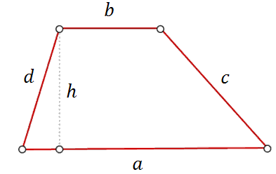
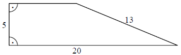
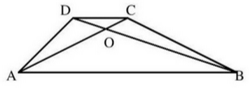

Trapez
Trapez jest czworokątem, który ma dwa boki
równoległe. Na rysunku poniżej równoległe są boki \(a\) i \(b\). 
Pole trapezu obliczamy ze wzoru: \[P=\frac{1}{2}(a+b)\cdot h\]
Pole trapezu obliczamy ze wzoru: \[P=\frac{1}{2}(a+b)\cdot h\]
W trapezie równoramiennym, który nie jest równoległobokiem, kąty przy ramieniu
różnią się o \(50^\circ \). Kąt przy krótszej podstawie tego trapezu jest równy
A.\(115^\circ \)
B.\(120^\circ \)
C.\(125^\circ \)
D.\(130^\circ \)
A
W trapezie miary kątów ostrych są równe \(30^\circ \) i \(60^\circ \). Wówczas
stosunek długości krótszego ramienia do dłuższego jest równy:
A.\( \frac{\sqrt{3}}{3} \)
B.\( \frac{1}{3} \)
C.\( \frac{\sqrt{2}}{2} \)
D.\( \frac{1}{2} \)
A
Rysunek przedstawia trapez prostokątny i długości trzech jego boków.  Obwód tego trapezu jest równy
A.\( 43 \)
B.\( 46 \)
C.\( 48 \)
D.\( 50 \)
B
Różnica miar kątów wewnętrznych przy ramieniu trapezu równoramiennego, który nie
jest równoległobokiem, jest równa \( 40^\circ \). Miara kąta przy krótszej podstawie jest równa.
A.\(120^\circ \)
B.\(110^\circ \)
C.\(80^\circ \)
D.\(70^\circ \)
B
Trapez jest prostokątny. Trójkąty podobne \(ABD\) i \(CBD\) są równoramienne.  Obwód trapezu jest równy
Obwód trapezu jest równy
Obwód trapezu jest równy A.\( 4+2\sqrt{2} \)
B.\( 2\sqrt{2} \)
C.\( 4+\sqrt{2} \)
D.\( 4 \)
C
Podstawy trapezu prostokątnego mają długości \(6\) i \(10\) oraz tangens jego kąta
ostrego jest równy \(3\). Oblicz pole tego trapezu.
\(P=96\)
W trapezie prostokątnym krótsza przekątna dzieli go na trójkąt prostokątny i
trójkąt równoboczny. Dłuższa podstawa trapezu jest równa \(6\). Oblicz obwód tego trapezu.
\(Obw = 15+3\sqrt{3}\)
Podstawy trapezu równoramiennego mają długości 5 i 13 oraz tangens kąta ostrego
jest równy 2. Oblicz pole tego trapezu.
\(P=72\)
Podstawy trapezu prostokątnego mają długości \(6\) i \(10\) oraz tangens kąta
ostrego jest równy \(3\). Oblicz pole tego trapezu.
\(P=96\)
Punkt \(E\) leży na ramieniu \(BC\) trapezu \(ABCD\), w którym \(AB\parallel CD\).
Udowodnij, że \(|\sphericalangle AED|=|\sphericalangle BAE|+|\sphericalangle CDE|\).
Punkt \(E\) leży na ramieniu \(BC\) trapezu \(ABCD\), w którym \(AB\parallel CD\).
Udowodnij, że jeżeli \(|EC|=|CD|\) oraz \(|EB|=|BA|\) to kąt \(AED\) jest prosty.
Trapez równoramienny \(ABCD\) o podstawach \(AB\) i \(CD\) jest opisany na okręgu o
promieniu \(r\). Wykaż, że \(4r^2 = |AB| \cdot |CD|\).
W trapezie prostokątnym kąt ostry ma miarę \( 60^\circ \), a podstawy mają długość
\(6\) i \(9\). Wysokość tego trapezu jest równa
A.\(6 \)
B.\(2\sqrt{3} \)
C.\(3\sqrt{3} \)
D.\(\frac{3\sqrt{3}}{2} \)
C
Wysokość trapezu równoramiennego o kącie ostrym \( 60^\circ \) i ramieniu długości
\( 2\sqrt{3} \) jest równa
A.\(\sqrt{3} \)
B.\(3 \)
C.\(3\sqrt{3} \)
D.\(2 \)
B
W trapezie \( ABCD\ (AB || CD) \) przekątne \( AC \text{ i } BD \) przecinają się w
punkcie \( O \) takim, że \( |AO|:|OC|=5:1 \). Pole trójkąta \( AOD \) jest równe \( 10 \).
Uzasadnij, że pole trapezu \( ABCD \) jest równe \( 72 \). 